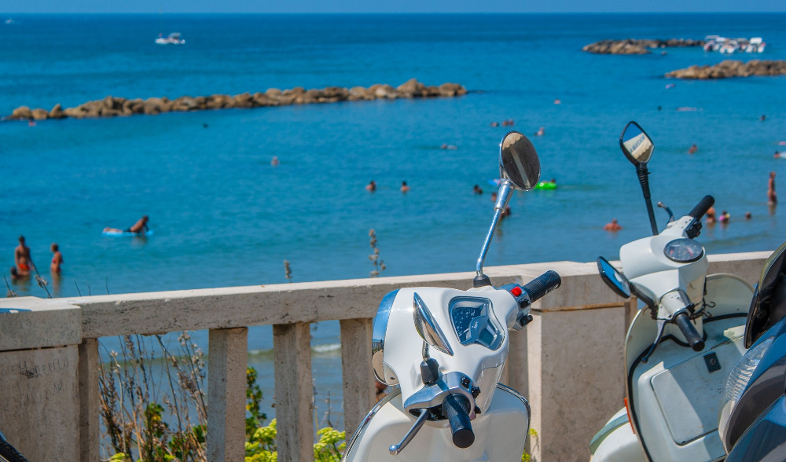
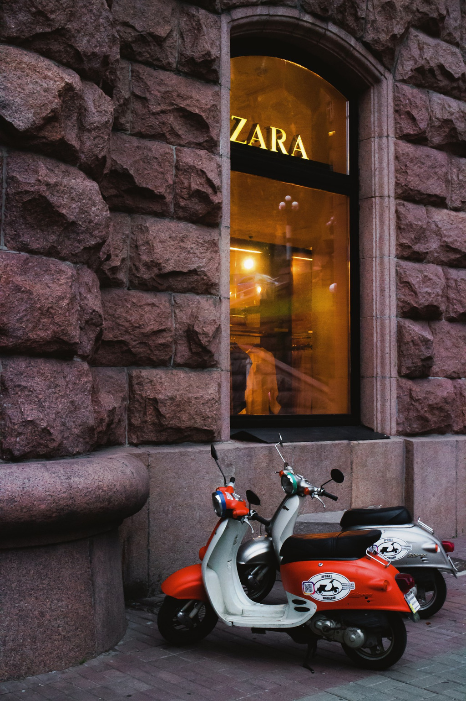
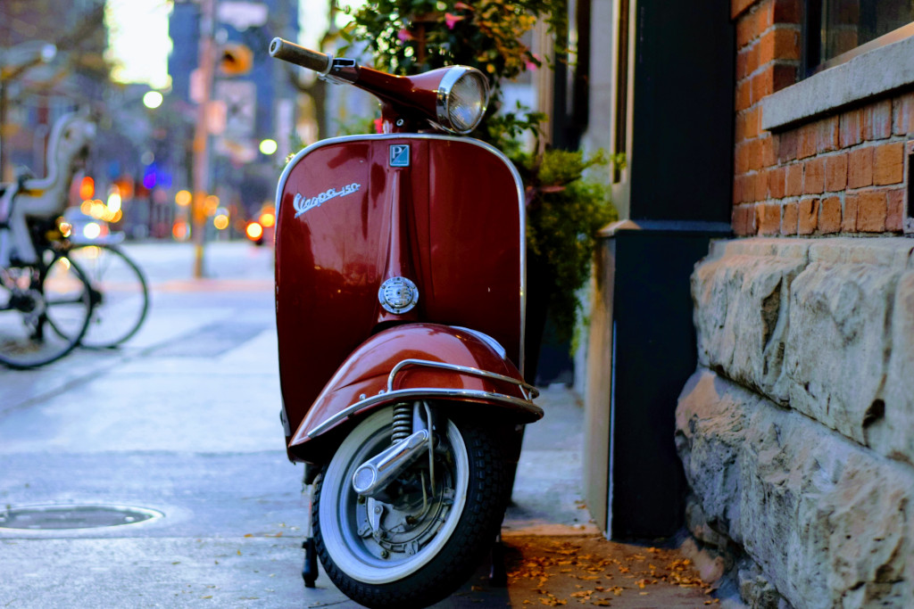
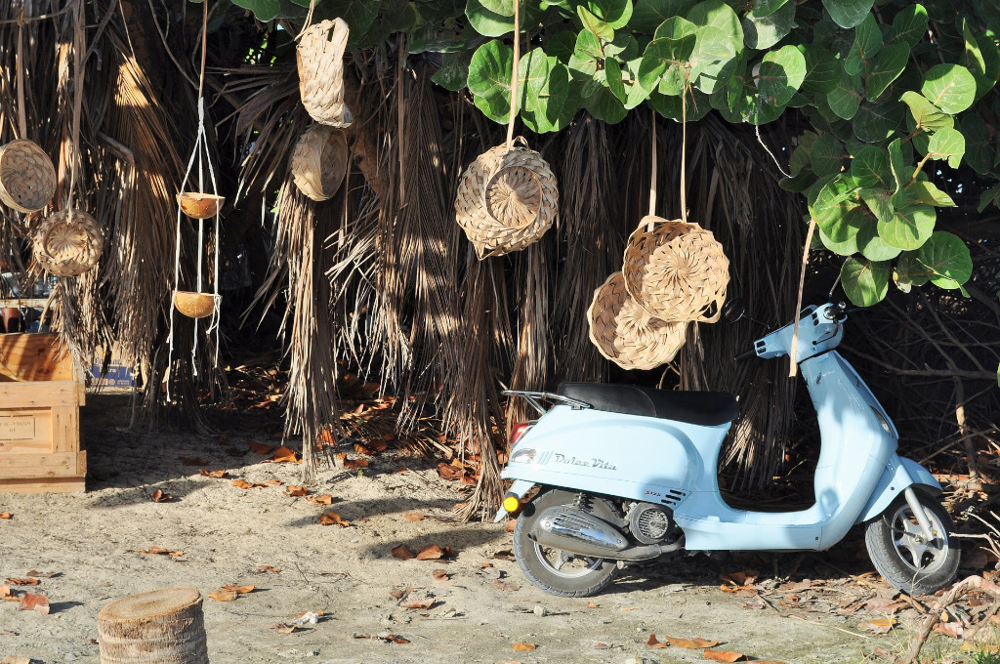

Tour the island!
   Tour 1
10 am Cozumel beach.
11 am Historic Site.
12 pm Zara, the monument, and area of food locations.
1 pm The road along the coast of the island.
Tour 2
1 pm Zara, the monument, and area of food locations.
2 pm Cozumel beach.
3 pm Historic Site.
4 pm TThe road along the coast of the island
Escuter
📍 G248+WC y F1JR+VQ San Miguel de Cozumel, Quintana Roo,
Cozumel Mexico
📞 52 33 2680 4137
✉ escuter@wp.com